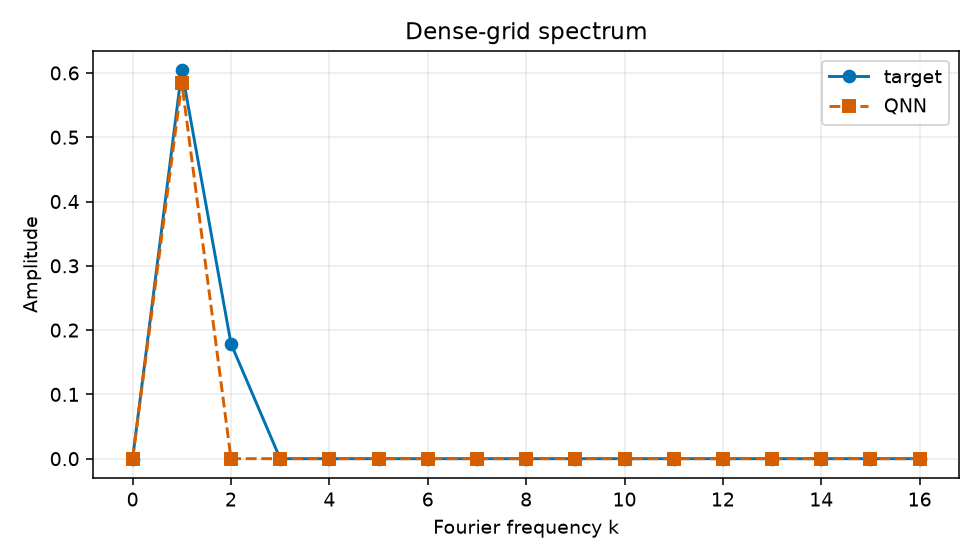

Uploads: 1; target frequencies: 2; train/validation/test: 64/128/512; objective: empirical training MSE only.
{
"run_id": "20261017T023856772598Z_reupload-1_k2_seed-0044_36cc2fdb",
"comparison_group": "periodic-function-mse-zero-offset-reupload-sweep-z1-readout",
"data_uploads": 1,
"n_target_frequencies": 2,
"seed": 44,
"data_seed": 314159,
"dataset_sizes": {
"train": 64,
"validation": 128,
"test": 512
},
"target_components": [
[
1,
0.55,
0.25
],
[
2,
0.16,
0.08
]
],
"target_offset": 0.0,
"objective": "training-set MSE only",
"optimizer": "L-BFGS-B",
"iterations": 7,
"function_evaluations": 64,
"optimizer_success": true,
"optimizer_message": "CONVERGENCE: NORM OF PROJECTED GRADIENT <= PGTOL",
"initial_train_mse": 0.6020614903936508,
"final_train_mse": 0.016317001290239712,
"validation_mse": 0.01755291010381839,
"test_mse": 0.016271891942527462,
"known_frequency_fourier_baseline_test_mse": 1.9968722039537117e-32,
"target_support": [
1,
2
],
"predicted_support": [
1
],
"frequency_support_threshold_function_amplitude": 0.001,
"support_precision": 1.0,
"support_recall": 0.5,
"target_amplitudes_k0_to_16": [
2.7755575615628914e-17,
0.6041522986797286,
0.1788854381999832,
3.402087014046196e-17,
1.1323340723711445e-17,
9.938690980430836e-18,
4.6922517800280036e-18,
9.373740922729999e-18,
1.7250611716194027e-18,
1.530158748162744e-17,
2.04244267811301e-18,
4.98898752229069e-18,
2.3501315884486092e-18,
7.198939290036171e-18,
1.065804665009402e-18,
1.2627840714523446e-17,
3.4240002976248174e-18
],
"predicted_amplitudes_k0_to_16": [
6.95109117834769e-17,
0.5846594356478563,
1.4387597545347055e-17,
8.743643270191284e-18,
5.693093966345652e-18,
7.328694643761357e-18,
2.851572858283205e-18,
7.578191081075232e-18,
4.432377782336787e-18,
1.0373825294489333e-17,
1.1079476109960203e-17,
2.4290191186000848e-18,
3.0581302952235547e-18,
3.934741791637993e-18,
8.317095673673232e-18,
2.317313040166994e-17,
9.216202604224945e-18
],
"frequency_amplitude_rmse_k0_to_16": 0.04364291715945463,
"artifacts": [
"dataset.npz",
"metrics.jsonl",
"parameters.npz",
"parameters.json",
"evaluation_outputs.npz",
"function_fit.png",
"spectrum.png",
"report.html"
]
}
